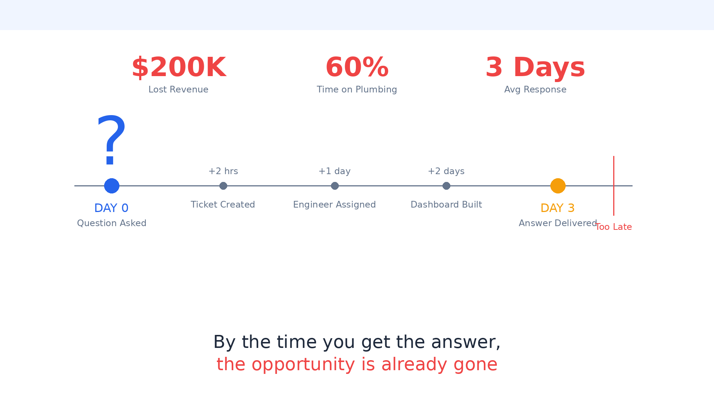
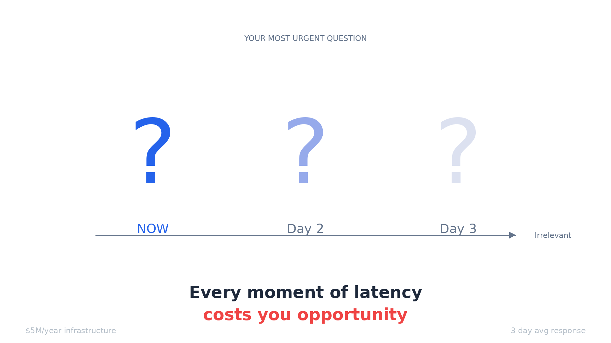
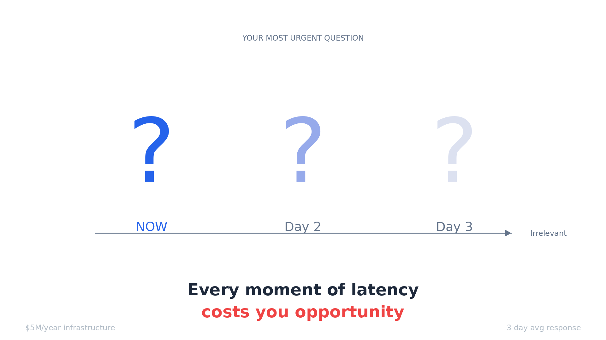

Part 1- Lack of Speed at AI Age - Towing the elephant with a Toyota Corolla
The Problem Everyone Feels But Can't Articulate
 

For the CEO: "You're spending $5M/year on data infrastructure. Your team takes 3 days to answer a simple business question. By the time you get the answer, the market has moved. Your competitors with worse data are moving faster than you."
For the VP of Engineering: "Your team spends 60% of their time on ETL pipelines that break every week. You have 40 Airflow DAGs, 15 dbt models, and nobody knows which data is actually correct. You hired 'data engineers' but they're really just plumbers fixing leaks."
For the Analyst: "You know SQL. You know the business. But you spend your day joining tables, waiting for queries, and explaining why the numbers don't match across reports. You're a translator between business questions and database schemas, not an analyst."
For Sales/Marketing: "You wanted to know why conversion dropped yesterday. IT said 'we'll build you a dashboard in 2 weeks.' By then, you've lost $200K in revenue and still don't know why."
The Precarious Tower
Every mid-to-large company is sitting on a data infrastructure that's fundamentally unstable. Not because of bad engineering—but because we've built a system that cannot scale with complexity.
Here's what your data stack looks like today:
This works... until it doesn't.
The Four Collapse Vectors
1. Complexity Collapse (Already Happening)
The warning signs you're seeing now:
Pipeline Fragility: One source schema change breaks 12 downstream models. Takes 2 days to fix. Happens twice a week.
Knowledge Concentration: Only Sarah knows how the revenue model works. She's leaving next month. You're fucked.
Debt Accumulation: You have 47 dbt models marked "legacy—do not touch." Nobody knows what they do. Nobody dares delete them.
Trust Erosion: Finance and Marketing report different revenue numbers. Neither is "wrong." You just have 3 definitions of "revenue" across 5 dashboards.
The breaking point: Your company doubles in size. Now you have 40 data sources instead of 20. Your pipeline complexity doesn't double—it quadruples. Your data team grows from 6 to 10. Should be enough, right?
Wrong. The number of dependencies grows exponentially. By month 3, your data team spends 80% of their time on maintenance. New dashboards take 6 weeks instead of 3 days. Business users stop asking questions. They start making decisions without data.
This is happening right now at companies with 500+ employees.
2. Latency Collapse (Next 12-18 Months)
The current trajectory:
Your business is moving faster:
A/B tests run for 2 days, not 2 weeks
Pricing changes daily based on competition
Customer support needs real-time intervention
Marketing campaigns pivot hourly based on performance
Your data infrastructure is moving the same speed it always has:
Batch ETL runs at 2am
Dashboards update every 4 hours
Ad-hoc queries take 20 minutes to run
Custom analysis takes 3 days
The gap is widening.
Right now, you can tolerate this. You make decisions with yesterday's data.
But your competitors are moving to real-time:
They see cart abandonment and intervene in 30 seconds
They detect churn signals and save customers same-day
They spot trending products and adjust inventory same-hour
The breaking point: You're in e-commerce. Black Friday. Traffic spikes 10X. Something's wrong—conversion is down 40%.
In 2015: You'd notice Monday morning. Too late, but acceptable. In 2025: You notice in real-time. Your competitor already fixed it. You're hemorrhaging $50K/hour.
Your data warehouse can't help you. It's still processing yesterday's data.
Within 18 months, real-time decision-making becomes table stakes. Batch infrastructure becomes a competitive liability.
3. Cost Collapse (Next 2-3 Years)
The current math:
This scales linearly with data volume. Your data is growing 100% per year.
In 3 years:
The breaking point: Your CFO looks at data infrastructure costs: $5.6M/year, growing 50% annually.
She asks: "What's the ROI?"
You answer: "Better decision-making."
She asks: "How much better? Can we quantify it?"
You can't. Because the main output of your data infrastructure is... dashboards that people don't look at and questions that take too long to answer.
She starts asking: "What if we cut the data team in half?"
You know what happens: Pipelines break. Dashboards go stale. Data team quits.
Data infrastructure becomes the cost center nobody wants to defend.
4. AI Disruption Collapse (Next 3-5 Years)
The invisible threat:
While you're maintaining ETL pipelines, your competitors are building different architecture:
They're not building better dashboards. They're eliminating the need for dashboards.
What this looks like in practice:
Your company (2025):
Business user asks: "Why did conversion drop?"
Data analyst: "I'll build you a dashboard. Give me 2 days."
2 days later: Dashboard shows conversion dropped
Business user: "Why though?"
Data analyst: "Let me investigate..." (another 2 days)
Their company (2027):
Business user asks: "Why did conversion drop?"
AI system: (8 seconds later) "Conversion dropped 15% due to checkout page timeout at 2:15pm. Root cause: database connection pool exhaustion from marketing email spike. 847 customers affected. Estimated loss: $47K. Recommend: increase connection pool or rate-limit email sends."
Business user: "Fix the connection pool."
AI system: "Done. Monitoring recovery."
The breaking point: Your competitor can answer 100 questions per day with a 3-person data team. You can answer 5 questions per day with a 12-person data team.
Your business users start asking: "Why can't we do what [competitor] does?"
You answer: "We'd need to rebuild our entire data infrastructure."
They say: "How long?"
You say: "18 months, $5M investment, high risk."
They say: "Never mind."
You're locked in to architecture that's becoming obsolete. Like companies stuck on mainframes in 2000.
Why This Collapse Is Different
Previous technology shifts gave you time:
Mainframe → Client-Server: 10-year transition
On-Premise → Cloud: 10-year transition
SQL → NoSQL: 15 years and SQL still dominates
This shift is different:
1. Economics Are Forcing It LLM API costs are dropping 90% per year. By 2027, asking an AI 1000 questions costs $1. Building 1000 dashboards costs $500K.
2. User Expectations Are Forcing It Everyone uses ChatGPT now. They expect to ask questions and get answers. "Learn SQL" is no longer acceptable.
3. Competition Is Forcing It First company in your vertical to deploy conversational analytics gets 2-3 year advantage. You can't catch up by hiring more analysts.
4. Technical Debt Is Forcing It Your current stack is collapsing under its own weight. Migration isn't optional—it's survival.
The Imminent Trigger Events
Any of these could accelerate collapse from "3-5 years" to "3-6 months":
Trigger 1: Major Vendor Lock-In Disaster
Snowflake announces 200% price increase (like they did 2023-2024). Companies realize they're hostages. Mass exodus begins. Those without a migration plan are stuck paying ransomware-level fees.
Trigger 2: LLM Breakthrough in Data Analysis
GPT-5 or Claude Opus 5 achieves 99% accuracy on SQL generation from natural language. Suddenly, every business user can query data directly. Data analysts become obsolete overnight. Companies with traditional BI stacks look ancient.
Trigger 3: Major Enterprise Adopts New Paradigm
When Walmart or Amazon publicly announces they eliminated their data warehouse and moved to event-driven conversational analytics, everyone else panics.
"If Amazon doesn't need a data warehouse, why do we?"
Trigger 4: Regulatory Change
GDPR-style regulation requiring real-time data deletion. Batch ETL can't comply—it takes 24-48 hours to propagate deletes. Event-driven architecture can delete instantly. Companies with traditional stacks face legal risk.
Trigger 5: Economic Recession
CFOs demand 30% budget cuts. Data infrastructure is $5M/year and can't prove ROI. Companies forced to choose: cut data team or rebuild with cheaper architecture. Those who rebuild first win. Those who just cut people collapse.
What Collapse Looks Like (2027-2030 Scenario)
Phase 1: The Cracks Appear (2025-2026)
Data teams at 50%+ companies spend majority time on maintenance
Average time-to-insight increases from 3 days to 5 days
Business users increasingly make decisions without data
Shadow IT: Departments buy their own analytics tools
Data infrastructure costs hit $10M+ at Fortune 500s
Phase 2: The Exodus Begins (2026-2027)
First major company (probably tech company) publicly deprecates data warehouse
Moves to event-driven + conversational analytics
Reports 10X faster insights at 1/5th the cost
Analyst coverage: "The End of the Modern Data Stack"
VCs stop funding traditional data infrastructure companies
Snowflake stock drops 50%
Phase 3: The Scramble (2027-2028)
Every company announces "data transformation initiative"
Consultants get rich selling migration services
Half of migrations fail (classic enterprise IT project failure rate)
Data warehouse vendors pivot to "real-time" messaging
Too late—architecture is fundamentally batch-oriented
Phase 4: The Bifurcation (2028-2030)
Clear winners and losers emerge
Winners: Rebuilt on event-driven, conversational, real-time
Losers: Still running ETL pipelines, can't hire talent, falling behind
Talent exodus: Data engineers don't want to maintain legacy stacks
Acquisition targets: Companies with good data are acquired by those without
What We're REALLY Building
The core insight: When someone asks "why did conversion drop yesterday?" they don't need a dashboard. They need an answer. Right now, getting that answer requires:
A data analyst who knows SQL
Access to 5 different data sources
3 hours to write queries and join tables
Another hour to interpret results
A meeting to explain findings
That's stupid. Not because the people are stupid - but because we're using 1970s query tools for 2025 questions.
What We're Actually Building
Not: "AI that understands your data" (sounds like magic)
Actually: Event store + domain-specific query engines + LLM for natural language parsing
Not: "Eliminating data warehouses" (sounds evangelical)
Actually: For 80% of business questions, you don't need a warehouse - you need fast access to recent events with context
Not: "Semantic Event Fabric" (sounds made-up)
Actually: Events with vector embeddings so you can search by meaning, not just field names
Not: "Systems that think"
Actually: Pre-built query patterns for common questions + LLM fills in the blanks
The Real Architecture
Nothing magical. Just:
Kafka for events
PostgreSQL with pgvector for semantic search
DuckDB for fast analytics
Claude API for natural language
Python gluing it together
Why This Isn't Stupid
The stupid-sounding claim: "We're replacing SQL"
The reality: For business users asking common questions about recent data, yes. They shouldn't need to learn SQL.
The stupid-sounding claim: "Real-time answers in seconds"
The reality: We're not running complex ML models. We're running pre-computed aggregations on recent events. Fast because: (1) only recent data, (2) indexed properly, (3) no joins across warehouses.
The stupid-sounding claim: "Event fabric eliminates ETL"
The reality: If your source systems publish events, you don't need to extract/transform/load. You subscribe to events and build views. This already exists - it's called event sourcing. We're just making it queryable via conversation.
What Already Works (Proof Points)
Uber: Doesn't use traditional ETL. Uses event streams for real-time decisions.
Netflix: Same. Event-driven architecture for recommendations and ops.
Stripe: Same. Webhooks (events) are the API.
We're not inventing event-driven architecture. We're making it accessible to non-engineers via natural language.
The Honest Limitations
What this DOESN'T replace:
Complex ML modeling → Still need data scientists
Historical trend analysis (years of data) → Warehouse still better
Regulatory reporting → Need audit trails in traditional DB
Ad-hoc data science exploration → Notebooks still better
What this DOES replace:
"Show me yesterday's metrics" → No need for dashboard
"Why did X happen?" → No need for analyst to investigate
"Which customers are at risk?" → No need for manual segmentation
"What's trending right now?" → No need for scheduled reports
The Calm, Sane Pitch
Problem: Most business questions are simple: "What happened? Why? What should I do?" But answering them requires data engineers, ETL pipelines, dashboards, and days of waiting.
Insight: If you capture what happens as events (not tables), and index those events by meaning (not just fields), you can answer most questions by searching recent history.
Solution: Natural language query layer → Intent parser → Domain-specific engines → Event store Same data. Different access pattern.
Result: Business users get answers in seconds instead of days. Data team focuses on hard problems instead of building dashboards.
Why now:
LLMs can parse intent reliably (2024+)
Vector search is production-ready (pgvector, Pinecone)
Event streaming is mature (Kafka, Redpanda)
Companies already have event streams (webhooks, logs, analytics)
What we're building: The query layer that sits on top of event streams and makes them conversational.
The Realistic Timeline
90 days: Working prototype with e-commerce use case 6 months: 3 paying customers using it in production 12 months: Handles 80% of business questions for mid-size companies 24 months: Considered alongside Snowflake for new data projects
Not "eliminating data warehouses" in 2 years. Just becoming the first place people ask questions before building dashboards.